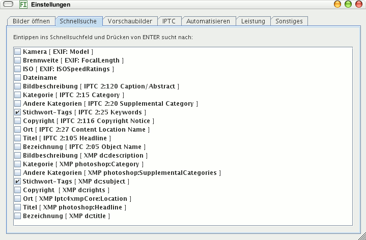

Die Schnellsuche ist das Eingabefeld am unteren Fensterrand. Sie funktioniert (erst), nachdem Sie hier ausgewählt haben, wonach Sie suchen wollen. Die Schnellsuche findet alle Bilder, die einen Teil des Suchbegriffs enthalten in irgendeinem Feld der angekreuzten Metadaten (SQL-ODER-Suche mit LIKE %Suchbegriff%). Groß- und Kleinschreibung sind egal. Geben Sie katze ein, werden Katze und Hauskatze gefunden.
Sollten Sie viele Felder ankreuzen, muss mehr durchsucht werden und die Suche dauert länger. Gefunden werden (nur) Bilder, die in die Datenbank eingelesen wurden.
Suchen Sie nach einem Aufnahmedatum, beispielsweise nach allen Bildern, die Sie am 24.12.2007 fotografiert haben, aktivieren Sie in den Einstellungen zur Schnellsuche das Feld Aufnahmezeit [ EXIF: DateTimeOriginal ]. Das Datumsformat ist: YYYY-MM-DD: Das Jahr vierstellig, danach ein Bindestrich, folgend der Monat zweistellig, wieder ein Bindestrich und zuletzt der Tag zweistellig. Für den 24.12.2007 geben Sie ein 2007-12-24.
Suchen Sie nicht nach einem Datum, deaktivieren Sie bitte die Aufnahmezeit im Einstellungen-Dialog, sonst finden Sie keine Bilder mehr bei Eingaben, die kein Zeitformat sind!